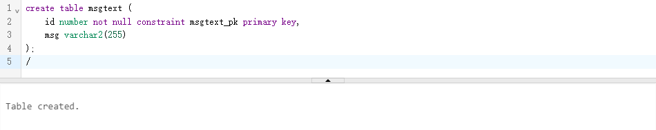
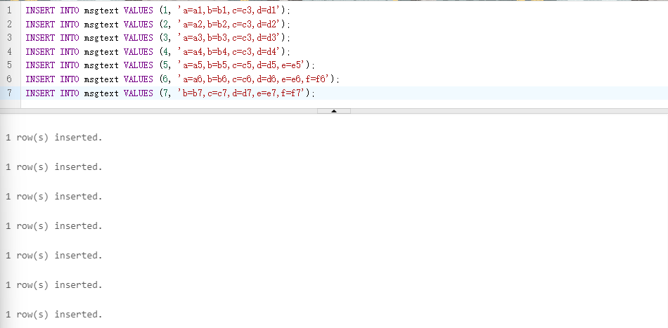
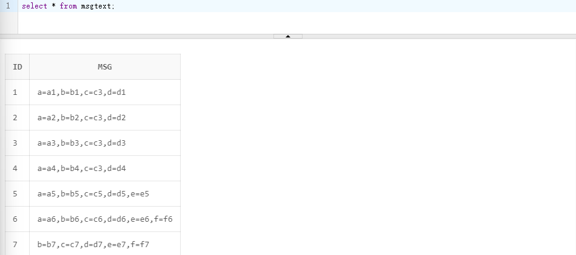
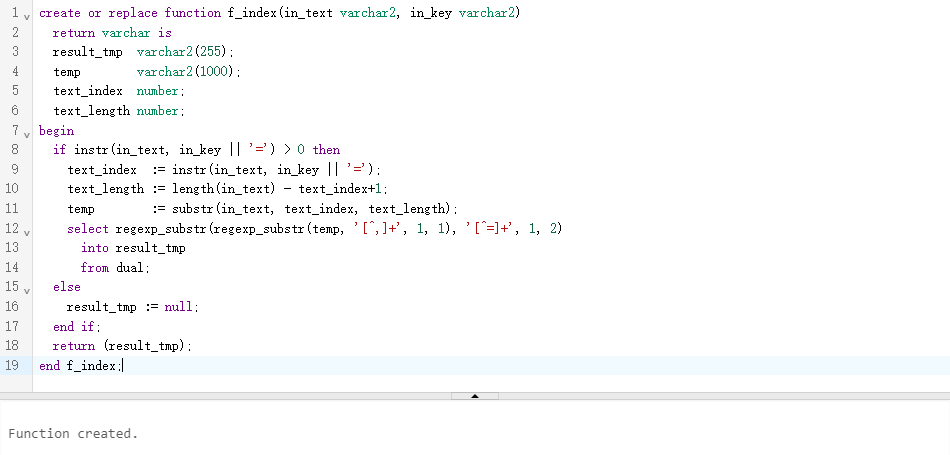
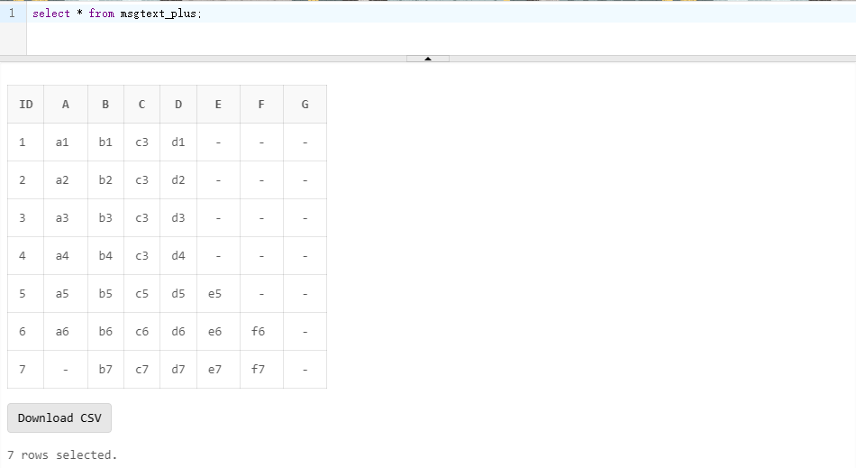

根据指定的特殊字符，将Oracle表中的某一个字段中的内容，拆成多个列。

前言
同事做了一个接口功能与其他公司交互，使用一个msg的字段保存往来报文信息，每条报文仅1行，使用,进行要素分割，并且使用=分割key和value。像下面这样:
1 | a=a1,b=b1,c=c3,d=d1 |
这行报文表示有如下数据
1 | { |
在设计中他直接将一整行交互的报文存入了数据库，这样设计看起来没问题，毕竟存的是原始报文嘛。但是他解析报文，处理完业务逻辑之后，没有将各个业务要素存到表里，结果在多方联测的时候就出现大问题了。
多方联测时经常会出现对手机构需要某个要素为某值报文对应的反馈报文。比如群里就会有人喊“帮我看一下a要素为a1的数据反馈的报文是什么样子!”，这下就头疼了，毕竟没有存业务字段就只能在报文中找，结果我们为了配合联测开始在sql里写like，整个联测就痛苦起来了。
于是我想到了直接写一个视图来将报文中的数据掰开，变成下面这种格式，联测终于开始舒服起来了。
| a | b | c | d | e |
|---|---|---|---|---|
| a1 | b1 | c1 | d1 |
下面是一个简单的Demo。
环境
- oracle
- 如果没有oracle环境可以使用官网的在线sql测试平台。
数据准备
创建一个表
1 | create table msgtext ( |

给表中插入数据
- 这里msg字段模拟每行报文
1
2
3
4
5
6
7INSERT INTO msgtext VALUES (1, 'a=a1,b=b1,c=c3,d=d1');
INSERT INTO msgtext VALUES (2, 'a=a2,b=b2,c=c3,d=d2');
INSERT INTO msgtext VALUES (3, 'a=a3,b=b3,c=c3,d=d3');
INSERT INTO msgtext VALUES (4, 'a=a4,b=b4,c=c3,d=d4');
INSERT INTO msgtext VALUES (5, 'a=a5,b=b5,c=c5,d=d5,e=e5');
INSERT INTO msgtext VALUES (6, 'a=a6,b=b6,c=c6,d=d6,e=e6,f=f6');
INSERT INTO msgtext VALUES (7, 'b=b7,c=c7,d=d7,e=e7,f=f7'); - 数据如下
1
select * from msgtext;
创建方法 f_index
1 | create or replace function f_index(in_text varchar2, in_key varchar2) |

创建视图
1 | create or replace view msgtext_plus as |
符合预期
1 | select * from msgtext_plus; |

这下就可以直接在where里面写条件查询数据了。
文章到此就结束啦，感谢查阅。